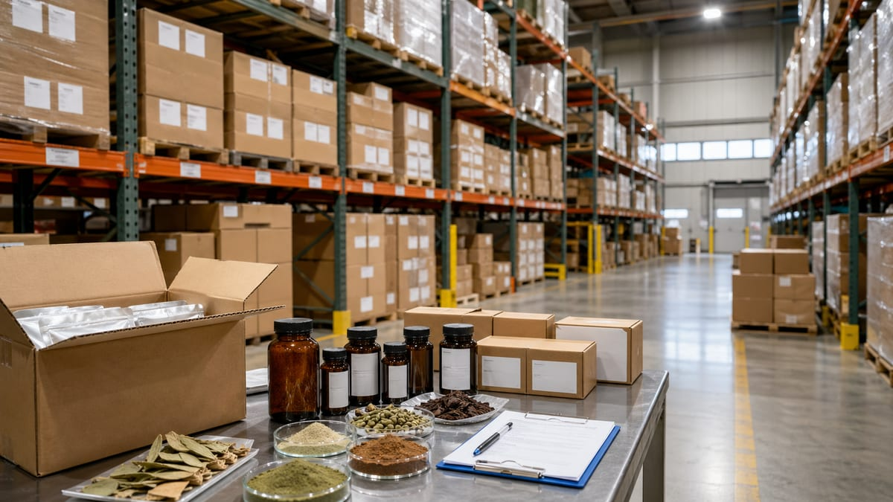
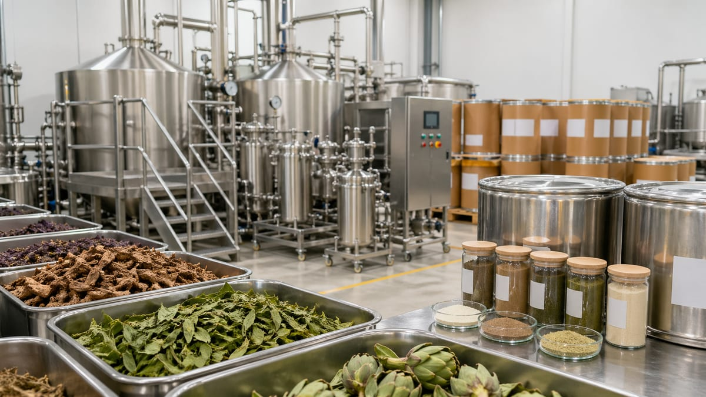
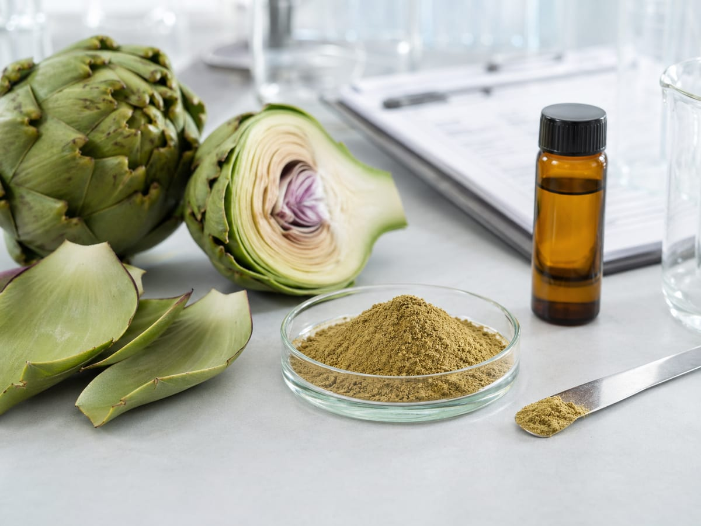

Buyers usually want to know which files can be shared and how those files connect to the next qualification step.
Resources
Buyer Guides, Documentation Notes, and Sourcing FAQ
This page is built for the review work that happens before a team sends an RFQ: supplier screening, document expectations, application-fit questions, and commercial alignment between sourcing, QA, and product teams.

Better sample requests happen when application, specification, and target review criteria are already defined.
U.S. warehouse availability, replenishment logic, and lead time assumptions all shape the first RFQ conversation.
This hub is designed to shorten the back-and-forth between procurement, QA, and commercialization teams.
Buyer guides
Use these pages to narrow the first conversation
These guides are written to help U.S. ingredient buyers ask sharper questions earlier. They are not blog filler. They are meant to reduce confusion around documents, stock language, and sample planning before internal review starts.

Guide 01
How U.S. buyers qualify a botanical ingredient supplier
A practical commercial checklist covering specification visibility, document path, U.S. stock language, and the supplier’s ability to support QA follow-up.
- Specification and marker review
- Document availability signal
- Sample and stock-route alignment

Guide 02
What to prepare before requesting a sample
A useful sample request starts with the intended format, target specification, and the exact document questions the team needs answered.
- Format and application context
- COA, TDS, or SDS needs
- Timeline and first-review objective
Guide 03
How to read document and stock labels before outreach
Buyers often need a simple translation layer for terms like COA, TDS, SDS, Available by Inquiry, and U.S. warehouse support.
- COA, TDS, and SDS roles
- What Available by Inquiry means
- When stock language needs confirmation
How U.S. B2B buyers evaluate a botanical ingredient supplier
Most teams do not start with branding. They start with product identity, specification confidence, document readiness, and whether the supplier can explain the most likely commercial path without creating extra loops.
- Can we understand the product identity quickly?
- Are the key document types clearly signaled?
- Is there a realistic U.S. stock or replenishment path?
- Can QA questions be handled without guesswork?
- Does the supplier communicate next steps clearly?
What to prepare before requesting a sample
A sample request is more productive when the buyer already knows the intended use, the document path they need, and what they want the first review to confirm. That reduces back-and-forth and helps match the request to the right product path.
- Target specification or marker expectation
- Application, dosage form, or formulation context
- COA, TDS, SDS, or declaration needs
- Sample quantity and review timeline
- Whether the request is exploratory or launch-driven

Documentation notes
Documentation only helps when it is tied to the buying path
Buyers are usually not asking for files in the abstract. They are trying to decide whether a product is worth screening, how fast internal review can move, and whether a sample or quote request makes sense next.
COA
Used to understand batch-level analytical results when a buyer is already narrowing the product and wants more review confidence.
TDS
Often the fastest first document for product identity, specification format, and commercial comparison across multiple options.
SDS
Important when internal safety, handling, and logistics review needs to move in parallel with sourcing discussion.
Application notes
Different teams ask different questions first
Application context changes the first screening logic. The same ingredient may be reviewed very differently by a supplement, beverage, food, or personal-care team.

Supplements
Marker language, document path, format options, and a clear sample workflow usually matter first.
Functional beverages
Solubility, appearance, origin story, and how quickly a supplier can respond become central very early.

Food formulations
Teams often screen for practical sourcing continuity, handling fit, and whether the RFQ path is realistic for the intended system.

Personal care
Even outside supplements, disciplined document handling and precise supplier communication still shape the review path.
Commercial workflow
Keep the review path connected from shortlist to first PO
Better sourcing conversations happen when product screening, document review, and stock-path confirmation are kept in one decision chain instead of being handled as disconnected tasks.
Shortlist the product
Start with identity, specification, and application fit before asking for batch-level depth.
Define the sample need
Clarify format, quantity, intended use, and which review question the sample needs to answer.
Align documents and timing
Keep COA, TDS, SDS, declarations, and stock confirmation tied to the same qualification path.
Move to RFQ with context
A quote request is more useful when the technical and commercial unknowns have already been narrowed.
FAQ
Short answers to recurring sourcing questions
These are written to reduce confusion before a buyer reaches out, especially around pricing visibility, document access, and stock terminology.
No. Essence Source is positioned as a B2B ingredient sourcing and inquiry website for U.S.-market buyers, not a retail storefront.
No. Pricing depends on specification, order volume, stock position, packaging, and document requirements, so the website focuses on RFQ and sample workflows instead.
Typical document paths include COA, TDS, and SDS. Product pages show document availability, and additional files can be requested during the inquiry process.
U.S. Warehouse Available means there is a U.S.-side fulfillment path. Available by Inquiry means stock and lead time details need confirmation. Made to Order means the lot path is specification-dependent.
Yes, within the limits of each ingredient and the intended use. The website avoids market claims and instead focuses on application fit, documentation, and supplier communication.